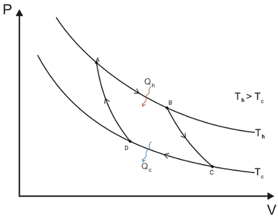

The Carnot Cycle and Efficiency
We introduce l'entropia, S, as a state function without proving it. If S, is a state function its variation along a cycle is null; We must prove that
∮ dS = δqrev/T = 0
We consider thus a reversible cyclic transformation which is known as the Carnot Cycle, in which the system (an heat engine) works between two heat sinks on at Th and the other Tc (hot and cold respectively). The cycle is made by four reversible processes:
An isothermal expansion from A to B at Th; The variation of entropy is dS = qh/Th, where qh is the heat absorbed by the system from the source at Th.
An adiabatic reversible transformation from B to C. Temperature is lowered from Th to Tc. Since in a adiabatic process q = 0 thys dS = 0.
A reversible isothermal compression from C to D, at Tc. The system transfers to the source at Tc the heat qc, thus dS = qc/Tc, where qc is negative.
Reversible adiabatic compression from D to A, thus q = 0. The temperature of the system increases from Tc to Th.
All stages are depicted in the following P-V diagramm
The variation of entropy with temperature along the cycle
From Fig. 5, heat absorbed in the reversible isothermal process from A → B is
qh = Th(S2 − S1)
mentre il calore ceduto nel passaggio C → D, è
qc = Tc(S2 − S1)
No heat transfer occurs during the adiabatic processes B → C and C → D. For the first law of thermodynamics the wrok done along the cycle is:
w = qh − qc = Th(S2 − S1) − Tc(S2 − S1)
The total entropy variation along the cycle is
∮ dS = qh/Th + qc/Tc = 0
The efficiency of the Carnot engine is
which can be simplified to
η = (Th − Tc)/Th
The efficiency depends on the temperature of the low- and high-temperature reservoirs the engine is operating
Vale inoltre
First, the efficiency of an engine is very simply related to the ratio of the low- and high-temperature reservoirs. The smaller this ratio is, the more efficient an engine is. Thus, high efficiencies are favored by high T high values and low T low values.
Finally, unless the temperature of the low-temperature reservoir is absolute zero (or qc = 0), the efficiency of an engine will always be less than 1, i.e less than 100%. We postualae that absolute zero is physically unobtainable, which is equal to say that
No cyclic engine can ever be 100% efficient.
This is known as Kelvin-Planck postulate and represents a statement of the second law of thermodynamics.
The first law of thermodynamics places no limitation on the possibility of transforming heat into work or work into heat, provided that the total amount of heat is equivalent to the total amount of work, hence, energy is conserved in the process. The second law of thermodynamics, however, places a define limitation on the possibility of transforming heat into work.
An engine that violates elvin-Planck postulate, is called a perpetual motion machine of the second kind (A perpetual-motion machine of the first kind violates the first law of thermodynamics, that is, the conservation of energy principle).
It is important to note that the Kelvin-Planck postulate does not say that it is impossible to convert all heat into work in a one-way proces but only in a cyclic process. For an ideal gas, in an isothermal process, ΔU = 0 = q − w, so q = w.
We will prove next Carnot’s principle that states: No heat engine can be more efficient than a reversible heat engine when both engines work between the same pair of temperatures Th and Tc.